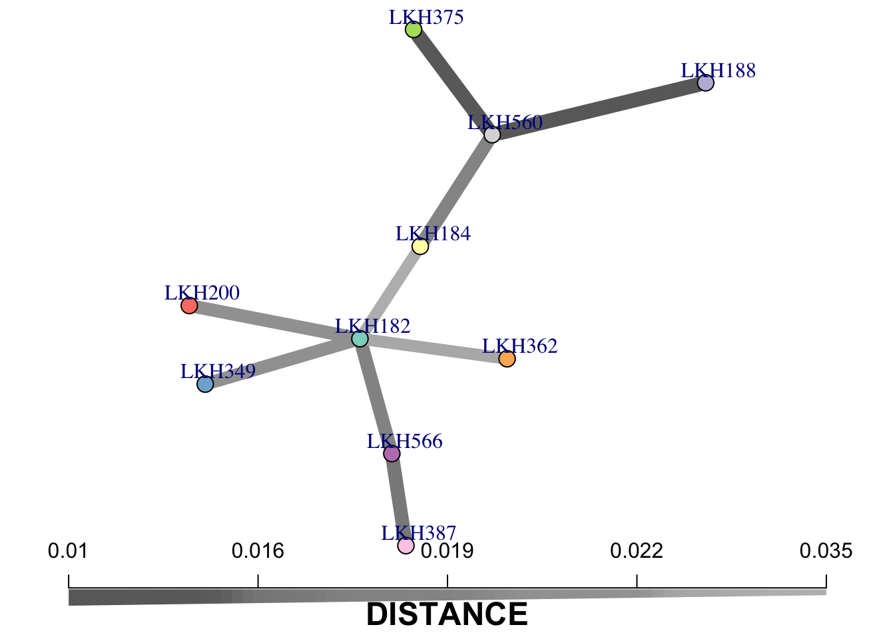
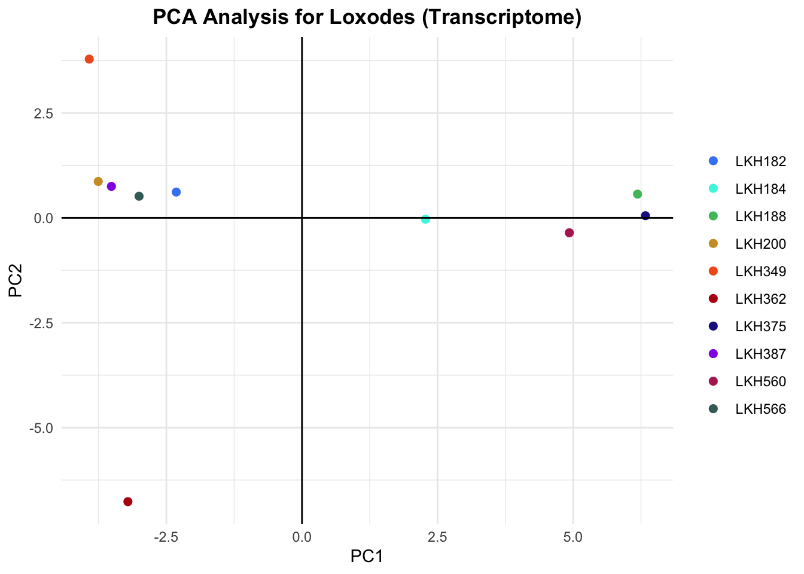
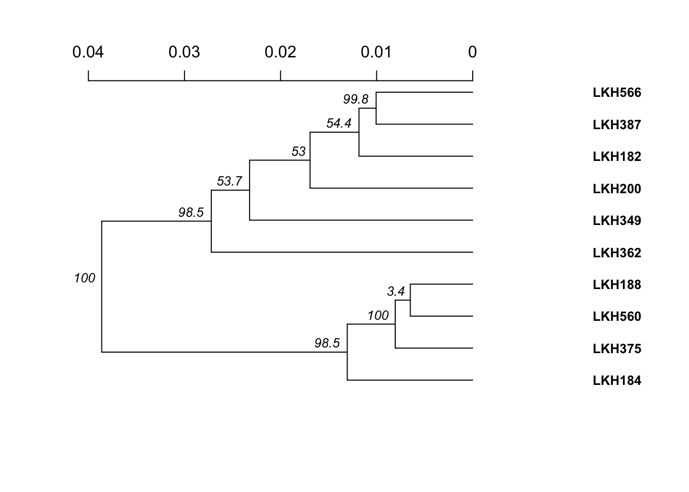

Poppr is a package for population genetic analyses. It is particularly useful for looking at genetic differentiation. In this tutorial, we look at a few ways to visualize the genetic distance between individuals.
First, we’ll load the needed libraries and data.
library(poppr)
library(vcfR)
library(tidyverse)
library(ape)
library(RColorBrewer)
library(igraph)
lox_pooled_98_vcfR <- read.vcfR("./Data/loxodes_pooled/all_filtered_98.vcf")We then need to convert the vcfR object to a genlight object. Genlight objects only support bi-allelic loci. Here, we lost 31 loci that weren’t bi-allelic. It’s important to note how much data lost in this conversion, but in this case, 31 loci isn’t very significant.
#converting vcfR object to genlight object
lox_pooled_genlight <- vcfR2genlight(lox_pooled_98_vcfR)## Warning in vcfR2genlight(lox_pooled_98_vcfR): Found 31 loci with more than two alleles.
## Objects of class genlight only support loci with two alleles.
## 31 loci will be omitted from the genlight object.pop(lox_pooled_genlight) <- substr(indNames(lox_pooled_genlight), 1, 6)Genlight objects can support individuals of different ploidies, but within a single individual the ploidy must be the same for all loci. Here we set the ploidy to 2.
We then use the bitwise.dist function to create a distance matrix. The assumptions for the bitwise.dist function are that SNPs are bi-allelic, samples are haploid or diploid, and all samples have the same ploidy.
ploidy(lox_pooled_genlight) <- 2
#form distance matrix with the bitwise.dist function from poppr
lox_dist <- bitwise.dist(lox_pooled_genlight)Now, we’ll create a minimum spanning network to visualize the genetic distance between individuals. The minimum spanning network algorithm groups multilocus genotypes by the genetic distances between them.The multilocus genotypes (individuals) are the nodes, and the lengths of the branches represent the genetic distance.
#create minimum spanning network using distance matrix
lox_msn <- poppr.msn(lox_pooled_genlight, lox_dist, showplot = FALSE, include.ties = T)
#lox_msn$populations <- substr(lox_msn$populations, 1, 6)
#create node size value based on number of individuals
node_size <- rep(2, times = nInd(lox_pooled_genlight))
#set names for nodes
names(node_size) <- popNames(lox_pooled_genlight)
lox_pooled_genlight$ind.names <- substr(lox_pooled_genlight$ind.names, 1, 6)
#set node size
vertex_attr(lox_msn$graph)$size <- node_size
#plot minimum spanning network
set.seed(9)
plot_poppr_msn(lox_pooled_genlight, lox_msn, palette = brewer.pal(n = nPop(lox_pooled_genlight), name = "Set3"), vertex.label.dist = 1, gadj = 70, pop.leg = FALSE, size.leg = FALSE) 
Another way to look at the genetic distance between individuals or populations is principal components analysis (PCA). This involves a rotation the axes to maximize variance between the samples. The SNP data is transformed into principal components, which are uncorrelated variables that are linear combinations of the initial variables. Maximum information is put into the first components. These principal components are the axes that represent the maximal amount of variance.
When comparing PCA plots, pay close attention to the axis.
#remove NA values
remove <- is.na(glMean(lox_pooled_genlight, alleleAsUnit = FALSE))
which(remove)
lox_pooled_genlight_new <- lox_pooled_genlight[, !remove]#perform principal component analysis
#first, keep the nf (number of principal components to be retained) as NULL
#after looking at the displayed eigenvalues, use a suitable nf value
lox_pca <- glPca(lox_pooled_genlight_new, nf = 3)
#include the principal components in a data frame
lox_pca_scores <- as.data.frame(lox_pca$scores)
#set the populations (in this case, we are looking at differentiation between individuals rather than populations, but it is the same concept)
lox_pca_scores$pop <- pop(lox_pooled_genlight)
#custom color palette
my_palette <- c("#4287f5", "#42f5e3", "#4ebf69", "#cf9c2d", "#f25d1d", "#b81111", "#1f2194", "#922ce6", "#b52a5f", "#416b69")
#create and show the PCA plot
lox_plot <- ggplot(lox_pca_scores, aes(x=PC1, y=PC2, colour = pop)) +
geom_point(size=2) +
geom_hline(yintercept=0) +
geom_vline(xintercept=0) +
theme_minimal() +
scale_color_manual(values = my_palette) +
labs(title = "PCA Analysis for Loxodes (Transcriptome)") +
theme(
plot.title = element_text(face = "bold", hjust = .5),
legend.title = element_blank())
lox_plot
Another way to visualize the genetic distance between individuals is to create a dendrogram with bootstrap support. The distance argument takes a function to generate the distance matrix. The bitwise.dist function is compatible with genlight objects. The sample argument is the number of boostrap replicates.
aboot(lox_pooled_genlight_new, distance = bitwise.dist, sample = 1000)##
Running bootstraps: 100 / 1000
Running bootstraps: 200 / 1000
Running bootstraps: 300 / 1000
Running bootstraps: 400 / 1000
Running bootstraps: 500 / 1000
Running bootstraps: 600 / 1000
Running bootstraps: 700 / 1000
Running bootstraps: 800 / 1000
Running bootstraps: 900 / 1000
Running bootstraps: 1000 / 1000
## Calculating bootstrap values... done.
##
## Phylogenetic tree with 10 tips and 9 internal nodes.
##
## Tip labels:
## LKH560, LKH387, LKH375, LKH184, LKH182, LKH200, ...
## Node labels:
## 100, 98.5, 98.5, 53.7, 53, 54.4, ...
##
## Rooted; includes branch lengths.